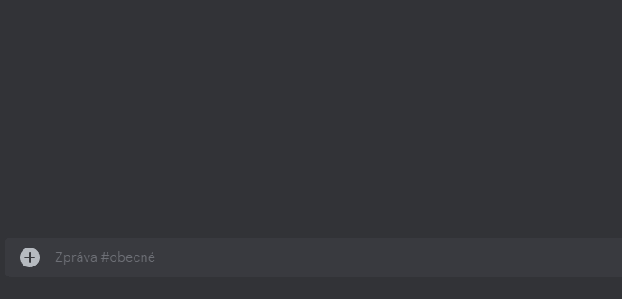
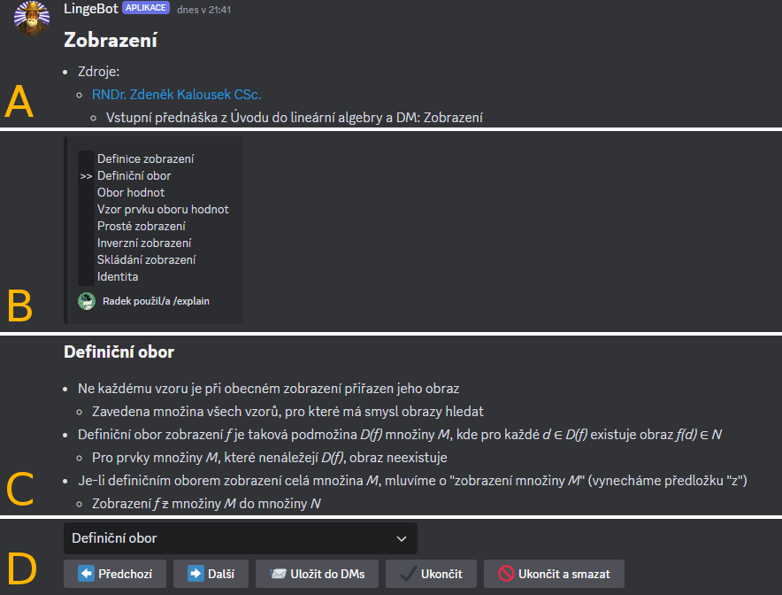

Výklad teorie
Princip příkazu /explain
Po odeslání příkazu /explain se v textovém kanálu objeví rozhraní pro výklad teorie. Výklad funguje tak, že bot do textového kanálu odesílá zprávy, které obsahují výpisky z uživatelem zvoleného matematického tématu. Tyto výpisky jsou vytvořeny provozovatelem bota.
Teoretické materiály se dělí na témata, která se pak dělí na podtémata. Po odeslání příkazu /explain se nejprve objeví výběrový seznam, kde si uživatel zvolí jedno téma, které ho zajímá. V textovém kanálu se pak vždy nachází pouze zprávy, které patří k jednomu podtématu vybraného tématu. Mezi podtématy lze přepínat pomocí tlačítek nebo výběrového seznamu.
Upozornění: Mechanismus odesílání/mazání zpráv a jeho rychlost
Při přepínání mezi podtématy jsou nejprve do kanálu odeslány zprávy nového podtématu a následně jsou smazány zprávy starého podtématu. Při tomto procesu, který může chvilku trvat, nebudou ovládací prvky reagovat. Pokud je zpráv více, může se proces na chvíli zastavit. Jedná se o omezení ze strany Discordu.
Tip: Výklad teorie v přímých zprávách
Používání výkladu teorie v textovém kanálu, kde komunikují nebo používají bota i jiní uživatelé, může být nepřehledné až chaotické. Zprávy odeslané botem se mohou zamíchat s cizími zprávami a teoretické výpisky pak nebudou dobře čitelné.
Proto je výklad teorie vhodné používat v kanálech s omezeným přístupem nebo v DMs. Pro zahájení konverzace v DMs slouží příkaz /dm.
Rozhraní příkazu /explain
Výběr tématu z výběrového seznamu:

Zobrazení vybraného tématu lze rozdělit na 4 části A až D:

A – název tématu a informace relevantní pro celé téma
B – přehled dostupných podtémat a právě vybraného podtématu
C – obsah aktuálně vybraného podtématu
D – výběrový seznam podtémat a ovládací tlačítka
| Tlačítko | Funkce |
|---|---|
| ⬅️ Předchozí | Zobrazí předchozí podtéma. |
| ➡️ Další | Zobrazí následující podtéma. |
| ⤴️ Změnit téma * | Vrátí se na prvotní výběr tématu. |
| 📨 Uložit do DMs | Přepošle aktuální podtéma do DMs. |
| ✔️ Ukončit | Ukončí rozhraní – tlačítka zmizí, ale zprávy v kanálu zůstanou. |
| 🚫 Ukončit a smazat | Ukončí rozhraní a smaže všechny příslušné zprávy. |
* V toto tlačítko se promění tlačítko ➡️ Další, pokud je aktuální podtéma to poslední.
Upozornění: Mizející tlačítka
Pokud od posledního stisknutí tlačítka nebo použití výběrového seznamu uběhne 15 minut, rozhraní se automaticky ukončí a tlačítka i výběrový seznam zmizí.
Ovládací prvky jsou takto skryty, protože po 15 minutách přestanou fungovat. Důvodem je vypršení platnosti WebHooks tokenu daného rozhraní.